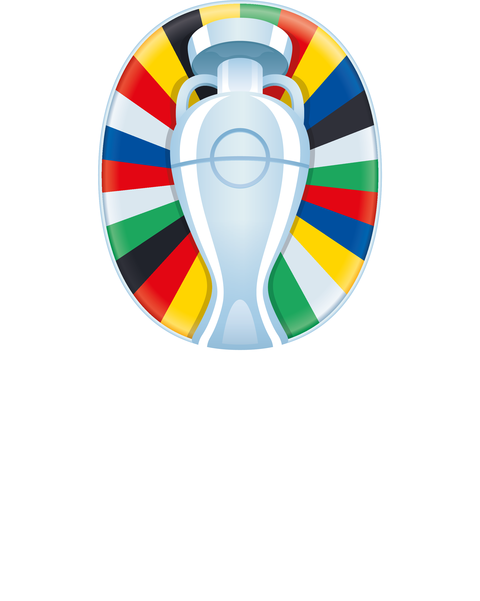

<mat-sidenav-container class="sidenav-container">
  <mat-sidenav #drawer class="sidenav" fixedInViewport
      [attr.role]="(isHandset$ | async) ? 'dialog' : 'navigation'"
      [mode]="(isHandset$ | async) ? 'over' : 'side'"
      [opened]="(isHandset$ | async) === false">
    <mat-toolbar>
      <div id="container-sidenav">
        
      </div>
    </mat-toolbar>
    <mat-nav-list>
      <a mat-list-item href="">Classifica</a>
      <a mat-list-item href="results/">Risultati</a>
      <a mat-list-item href="predictions/">Pronostici</a>
      <a mat-list-item href="scorers/">Marcatori</a>
      <a mat-list-item href="points/">Dettaglio Punti</a>
    </mat-nav-list>
  </mat-sidenav>
  <mat-sidenav-content>
    <mat-toolbar color="primary">
      @if (isHandset$ | async) {
        <button
          type="button"
          aria-label="Toggle sidenav"
          mat-icon-button
          (click)="drawer.toggle()">
          <mat-icon class="white-icon" aria-label="Side nav toggle icon">menu</mat-icon>
        </button>
      }
      <div id="container">
        
      </div>
    </mat-toolbar>
    <!-- Add Content Here -->
    <router-outlet></router-outlet>
  </mat-sidenav-content>
</mat-sidenav-container>
